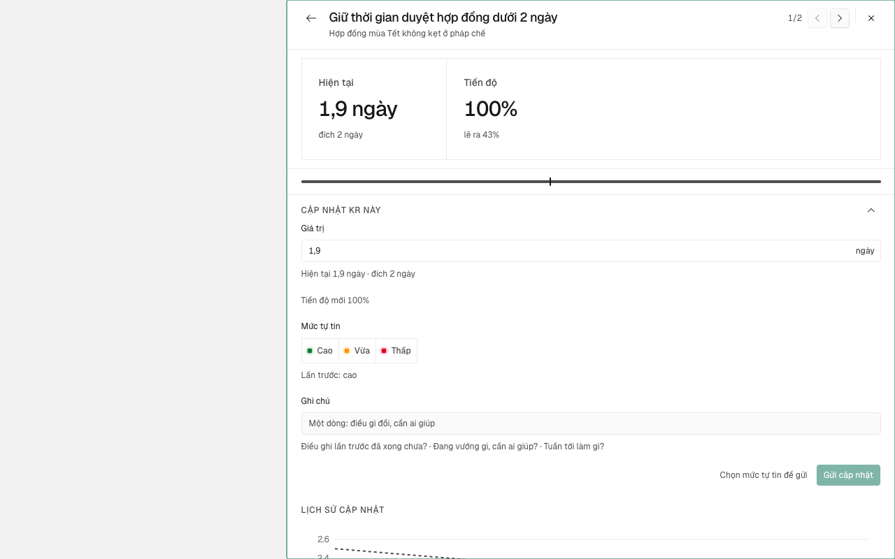
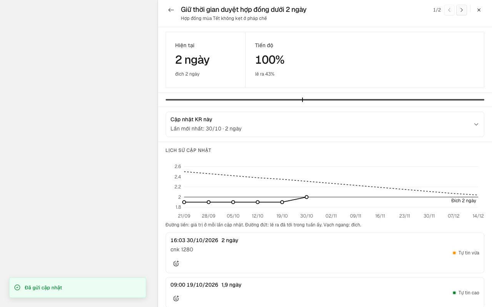
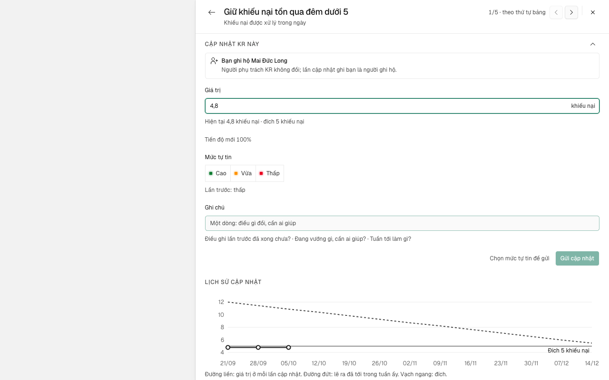
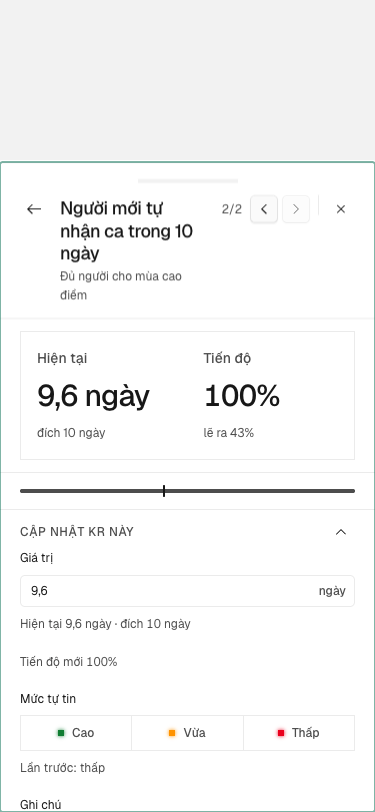
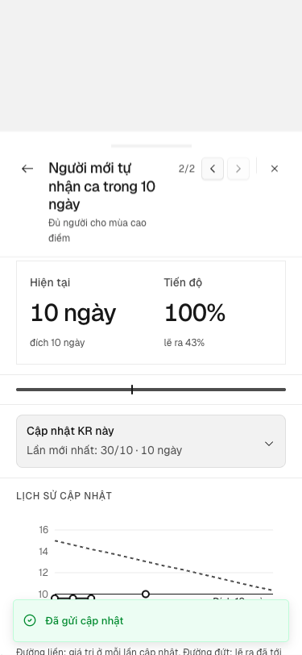
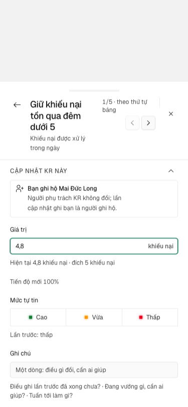

Người phụ trách KR mở chi tiết KR, ghi giá trị mới, mức tự tin và ghi chú ngay trong ngăn, thấy điểm mới trên Lịch sử và sang KR kế mà không mở hộp thoại nào
Vì sao làm
Production 30/10: bấm «Cập nhật» ở đầu ngăn KR mở hộp thoại giữa màn (HopThoaiCapNhatKr, apps/app/app/(app)/[slug]/okr/hop-thoai-cap-nhat-kr.tsx) che mất ngăn; hộp lặp biểu đồ (gom theo tuần, okr.dienBien) trong khi Lịch sử của ngăn vẽ từng lần (okr.lichSuKr); mọi ngăn bản ghi khác ghi tại chỗ (ActivityComposer của Deal, Trao đổi của mục tiêu). Soát ở phiên giám sát vk 30/10; luật mới ở docs/design.md mục «Ghi vào bản ghi: ngay trong ngăn».
Đã hứa
- AC-1 — Given người sửa được KR K (`coNutCapNhat` đúng) và K đến hạn chưa cập nhật (Hỏi-1), When mở chi tiết K, Then
- AC-2 — Given người không sửa được K, hoặc kỳ đang chấm điểm hay đã đóng, hoặc mục tiêu đã bỏ, When mở chi tiết K, Then
- AC-3 — Given khối đang mở, When gõ một giá trị hợp lệ, Then biểu đồ của Lịch sử hiện thêm đúng một chấm nét đứt tại giá
- AC-4 — Given đã nhập giá trị, mức tự tin, ghi chú, When bấm «Gửi cập nhật» hoặc Ctrl/⌘+Enter, Then thêm đúng một
- AC-5 — Given máy chủ từ chối lần gửi, When gửi, Then khối báo lỗi ngay trong khối bằng câu người đọc được, nháp giữ
- AC-6 — Given khối có nháp chưa gửi, When đóng ngăn hoặc bấm ‹ ›, Then hỏi lại trước khi bỏ nháp; chọn ở lại thì ngăn và
- AC-7 — Given dòng Họp tuần, dòng KR của bảng theo đơn vị, hay menu «…» của ngăn mục tiêu có lối «Cập nhật» cho K, When
- AC-8 — Given chi tiết K, When nhìn đầu ngăn, Then không còn nút chính «Cập nhật»; ‹ › và đếm giữ nguyên. When gửi xong
- AC-9 — Given khổ 375 (chi tiết KR là ngăn kéo), When làm AC-1, AC-4, AC-7, Then khối nằm trong ngăn kéo, gửi được, và
- AC-10 — Given đã sửa, When chạy bộ bài kiểm và các thước đã ký đang đo cập nhật KR, Then mọi bài xanh và hộp
Thiết kế
_acceptance/cap-nhat-trong-ngan-kr/design.md
Quyết định
- 2026-10-30 · Máy · approach · S1 — Đã tra tri thức: Người phụ trách KR mở chi tiết KR, ghi giá trị mới, mức tự tin và ghi chú ngay trong ngăn, thấy điểm mới trên Lịch sử và sang KR kế mà không mở hộp thoại nàoKho đã khai tri_thuc — bước thiết kế tra trang trước khi chọn.
- 2026-10-30 · Máy · approach · S1 — Một chỗ ghi: gỡ HopThoaiCapNhatKr và useCapNhatKr; mọi lối cập nhật một KR đi qua khối trong chi tiết KR, giữa ô số và Lịch sử.Luật kho chốt 30/10 chỉ cho một form cập nhật.
- 2026-10-30 · Máy · approach · S1 — Khối không vẽ biểu đồ hay khối «lần trước»; xem trước là một chấm nét đứt trên biểu đồ Lịch sử và một dòng mức đổi trong khối.Luật kho cấm lặp thứ ngăn đã có; Lịch sử (SV7) đã vẽ mọi lần.
- 2026-10-30 · Máy · approach · S1 — Đầu ngăn KR bỏ nút chính «Cập nhật»; nút «Gửi cập nhật» của khối là nút chính duy nhất cho việc này.Luật kho: ngăn không mang thêm nút chính ở đầu cho cùng việc.
- 2026-10-30 · Máy · approach · S1 — Lối khác mở chi tiết KR với tab=cap-nhat trên đường dẫn, cùng cách tab=so-nguon cuộn tới mục Số và nguồn; mỗi lối ghi entry riêng (hop-tuan, bang-don-vi, muc-tieu; khối trong ngăn ghi sheet).Luật kho đòi lối khác mở ngăn và cuộn tới khối, mỗi lối một entry; tham số tab đã có và sống qua tải lại.
- 2026-10-30 · Máy · approach · S1 — Khối là thành phần của apps/app (record-sheet/khoi-cap-nhat-kr.tsx), chưa vào packages/ui.Chỉ chi tiết KR dùng nó; luật chỉ đưa vào packages/ui khi hai khu trở lên dùng.
- 2026-10-30 · Máy · approach · S1 — Hỏi-1: «đến hạn chưa cập nhật» là người sửa được KR, kỳ đang chạy, và KR chưa có lần cập nhật nào trong tuần này (giờ Việt Nam, từ thứ Hai) — đúng luật danh sách «Cần cập nhật tuần này» ở Của tôi.Kho có hai định nghĩa: Của tôi (chưa cập nhật tuần này) và tin nhắc (đã qua thứ cập nhật của chu kỳ); chọn giữa hai là nghĩa sản phẩm người dùng thấy.
- 2026-10-30 · Máy · approach · S1 — Khối không vẽ biểu đồ hay khối «lần trước»; xem trước là một chấm nét đứt trên biểu đồ Lịch sử và một dòng mức đổi trong khối.Luật kho cấm lặp thứ ngăn đã có; Lịch sử (SV7) đã vẽ mọi lần.
- 2026-10-30 · Máy · approach · S1 — Hỏi-2: thay hai lời hứa đã ký theo luật 30/10 — khối «lần trước» trong hộp (hop-cap-nhat-lan-truoc) thành dòng đầu Lịch sử cộng dòng mức đổi trong khối; nút «Cập nhật» đầu ngăn KR (VK7 ngan-kr-mot-cho, HT2) thành khối trong ngăn. Mọi assertion khác của thước đã ký chỉ chuyển chỗ đo, giữ kỳ vọng.Lời hứa đã ký chỉ người ký đổi được; luật Ghi vào bản ghi của docs/design.md đã chốt hướng nhưng không gọi tên hai hồ sơ (gap-probe P0).
- 2026-10-30 · Máy · approach · S1 — Chạy design-pass không đồng bộ trên /proto/cap-nhat-trong-ngan-kr: 11 trạng thái × khổ 1440 và 375, hộp hiện hành đặt cạnh khối mới.Luật 33 của đợt đòi proto đặt hộp hiện tại cạnh khối trong ngăn trước Cổng Phạm vi.
- 2026-10-30 · Máy · approach · gate1 — Chủ kho duyệt Cổng Phạm vi bằng «duyệt»: nhận khuyến nghị Hỏi-1 (khối mở sẵn khi KR chưa có lần cập nhật nào trong tuần này giờ VN, không chờ thứ cập nhật) và Hỏi-2 (thay hai lời hứa đã ký: khối «lần trước» và nút «Cập nhật» đầu ngăn KR).Câu gộp «/acceptance-gate:approve cap-nhat-trong-ngan-kr duyệt» trả lời hai câu chỉ người biết theo dòng sổ d-20261030T063810Z-7 và d-20261030T064203Z-9; ô (d) của E1 ghi "mo" theo Hỏi-1.
- 2026-10-30 · Người · seal · gate1 —
- 2026-10-30 · Máy · approach · S2 — Lối ngoài ngăn ghi entry qua một biến mô-đun đọc một lần khi khối mở (cùng nếp CHUYEN_KR của kr-sheet), không thêm tham số mới lên đường dẫn; bảng Họp tuần biết KR vừa gửi qua kênh nghe/báo của khối.Thêm khoá nuqs phải sửa search-param-keys ngoài ranh giới hàng; tab=cap-nhat đủ để mở và cuộn (E7), entry chỉ cần cho đo lối vào.
- 2026-10-30 · Máy · approach · S2 — Chủ kho duyệt kế hoạch thi công bằng câu «Duyệt kế hoạch» sau khi xem bản mẫu /proto/cap-nhat-trong-ngan-kr ở trạng thái mo-san.Kế hoạch docs/superpowers/plans/2026-10-30-cap-nhat-trong-ngan-kr.md chạm đúng bộ tệp của yêu cầu V1-7; lời duyệt đã chuyển nguyên văn cho giám sát để ghi tra-loi/V1-7.json.
- 2026-10-30 · Người (Phan Le Manh) · approach · S3 — Chủ kho duyệt V1-10 bằng «duyệt cả A–F»: thay sáu lời hứa đã ký — A lối ngoài mở ngăn KR, entry riêng, gửi xong khối thu và ngăn vẫn mở, tên KR ở đầu ngăn; B gửi từ Họp tuần xong tiêu điểm ở lại ngăn, đóng ngăn thì về nút trên dòng; C Esc đóng ngăn thay nút Huỷ; D ngày giờ lần trước theo dạng dòng Lịch sử; E KR mốc không ghi Xong/Chưa xong ở dòng Lịch sử; F tải và lỗi theo Lịch sử.Các lời hứa này đo hộp thoại đã gỡ; sau AC-4 và AC-7 không thể giữ nguyên nghĩa (yêu cầu V1-10).
- 2026-10-30 · Máy · fix · S3 — Bài E1 dùng ngày đúng thứ: đồng hồ thứ Năm 29/10/2026 (ô a), biên tuần lần cuối thứ Hai 26/10 00:30 giờ VN = Chủ nhật 25/10 theo UTC (ô c), đồng hồ thứ Hai 26/10 (ô d); evals.yaml ghi 30/10 «thứ Năm» và 27/10 «thứ Hai» là lệch lịch.30/10/2026 là thứ Sáu, 27/10 là thứ Ba; nghĩa của ô là thứ trong tuần (biên tuần VN), nên bài đo theo thứ chứ không theo con số ngày viết sai.
- 2026-10-30 · Máy · fix · S3 — E3 và E4a đếm chấm xem trước bằng [data-diem-moi] — thuộc tính sẵn có của TargetLineChart trong packages/ui — thay cho tên [data-diem-xem-truoc] viết trong evals.yaml.Thêm thuộc tính mới vào packages/ui nằm ngoài ranh giới hàng; [data-diem-moi] chính là chấm nét đứt xem trước mà eval mô tả.
- 2026-10-30 · Máy · fix · S3 — Chiều đỏ của E9 dùng bản phá «trả mã lối cập nhật về hộp thoại trước vòng» và đỏ ở bước 1 (SAI 1280 buoc 1 … khoi mo false, mã 2), thay cho câu ghim «cnk-man: 1280 buoc 2 dialog=1» viết trong evals.yaml.Bản trước vòng không có khối trong ngăn nên thước dừng ngay bước 1 trước khi tới bước 2; vẫn là cùng một hỏng (không có khối, cập nhật đi qua hộp) và thước đỏ có tên.
- 2026-10-30 · Máy · fix · S3 — E9 (ui-check) thêm trường steps và inputs bắt buộc mà s4-args đòi; steps chép đúng ba bước của expected, không đổi kỳ vọng.s4-args.mjs từ chối sinh args: «eval E9 (ui-check): thiếu/hỏng trường mảng bắt buộc steps».
- 2026-10-30 · Máy · fix · S4-r1 — Sửa hai lỗi của lượt chấm vòng 1: răng thuoc-da-ky so từng khẳng định (mỗi khẳng định mất phải có ô ma trận trích nguyên văn; thêm 9 ô) thay vì so tổng; khối và chữ hiển thị đạt messages-guard (phím tắt có chữ, khuôn mức đổi ghép trong mã, gọi từng khoá hoiBo, dùng lại hopCapNhat.dangMo trên nút gửi).E10b đỏ ở messages-guard.spec.ts (ba ca: không dấu, trùng bản tiếng Anh, khoá chết); phát hiện trong hợp đồng AC-10: phép đếm tổng bù trừ được nên bỏ lọt khẳng định mất.
- 2026-10-30 · Máy · revisit · gate2 — Ngoài-1: ghi Known limitsmáy tự định tuyến theo đề xuất S4 «known-limits» — kho bật feature_loop.ngoai_n_tu_dinh_tuyen
- 2026-10-30 · Máy · revisit · gate2 — Ngoài-2: ghi Known limitsmáy tự định tuyến theo đề xuất S4 «known-limits» — kho bật feature_loop.ngoai_n_tu_dinh_tuyen
- 2026-10-30 · Máy · revisit · gate2 — Ngoài-3: ghi Known limitsmáy tự định tuyến theo đề xuất S4 «known-limits» — kho bật feature_loop.ngoai_n_tu_dinh_tuyen
- 2026-10-30 · Máy · revisit · gate2 — Ngoài-4: ghi Known limitsmáy tự định tuyến theo đề xuất S4 «known-limits» — kho bật feature_loop.ngoai_n_tu_dinh_tuyen
- 2026-10-30 · Máy · revisit · gate2 — Ngoài-5: chấp nhận, không sửamáy tự định tuyến theo đề xuất S4 «wont-fix» — kho bật feature_loop.ngoai_n_tu_dinh_tuyen
- 2026-10-30 · Máy · revisit · gate2 — Ngoài-6: ghi Known limitsmáy tự định tuyến theo đề xuất S4 «known-limits» — kho bật feature_loop.ngoai_n_tu_dinh_tuyen
- 2026-10-30 · Máy · revisit · gate2 — Ngoài-7: ghi Known limitsmáy tự định tuyến theo đề xuất S4 «known-limits» — kho bật feature_loop.ngoai_n_tu_dinh_tuyen
- 2026-10-30 · Máy · revisit · gate2 — Ngoài-8: ghi Known limitsmáy tự định tuyến theo đề xuất S4 «known-limits» — kho bật feature_loop.ngoai_n_tu_dinh_tuyen
- 2026-10-30 · Máy · revisit · gate2 — Ngoài-9: chấp nhận, không sửamáy tự định tuyến theo đề xuất S4 «wont-fix» — kho bật feature_loop.ngoai_n_tu_dinh_tuyen
- 2026-10-30 · Máy · revisit · gate2 — Ngoài-10: ghi Known limitsmáy tự định tuyến theo đề xuất S4 «known-limits» — kho bật feature_loop.ngoai_n_tu_dinh_tuyen
- 2026-10-30 · Máy · revisit · gate2 — Ngoài-11: ghi Known limitsmáy tự định tuyến theo đề xuất S4 «known-limits» — kho bật feature_loop.ngoai_n_tu_dinh_tuyen
Bằng chứng
Các eval
| Eval | Tiêu chí | Loại | Verdict | run_id | verified_at |
|---|---|---|---|---|---|
| E1 | AC-1 | test | PASS | minted-cap-nhat-trong-ngan-kr-E1-r2 | 2026-10-30T09:27:32Z |
| E2 | AC-2 | test | PASS | minted-cap-nhat-trong-ngan-kr-E2-r2 | 2026-10-30T09:27:32Z |
| E3 | AC-3 | test | PASS | minted-cap-nhat-trong-ngan-kr-E3-r2 | 2026-10-30T09:27:32Z |
| E4a | AC-4 | test | PASS | minted-cap-nhat-trong-ngan-kr-E4a-r2 | 2026-10-30T09:27:32Z |
| E4b | AC-4 | test | PASS | minted-cap-nhat-trong-ngan-kr-E4b-r2 | 2026-10-30T09:27:32Z |
| E5 | AC-5 | test | PASS | minted-cap-nhat-trong-ngan-kr-E5-r2 | 2026-10-30T09:27:32Z |
| E6 | AC-6 | test | PASS | minted-cap-nhat-trong-ngan-kr-E6-r2 | 2026-10-30T09:27:32Z |
| E7 | AC-7 | test | PASS | minted-cap-nhat-trong-ngan-kr-E7-r1 | 2026-10-30T09:01:49Z |
| E8 | AC-8 | test | PASS | minted-cap-nhat-trong-ngan-kr-E8-r2 | 2026-10-30T09:27:32Z |
| E9 | AC-9 | ui-check | PASS | minted-cap-nhat-trong-ngan-kr-E9-r2 | 2026-10-30T09:27:32Z |
| E10a | AC-10 | script | PASS | minted-cap-nhat-trong-ngan-kr-E10a-r2 | 2026-10-30T09:27:32Z |
| E10b | AC-10 | test | PASS | minted-cap-nhat-trong-ngan-kr-E10b-r2 | 2026-10-30T09:27:32Z |
| E10c | AC-10 | script | PASS | minted-cap-nhat-trong-ngan-kr-E10c-r2 | 2026-10-30T09:27:32Z |
Chi tiết từng eval
PASS E1 · test
AC-1: Given người sửa được KR K (`coNutCapNhat` đúng) và K đến hạn chưa cập nhật (Hỏi-1), When mở chi tiết K, Then
Ran 1 test across 1 file. [1.86s]
PASS E2 · test
AC-2: Given người không sửa được K, hoặc kỳ đang chấm điểm hay đã đóng, hoặc mục tiêu đã bỏ, When mở chi tiết K, Then
Ran 1 test across 1 file. [1191.00ms]
PASS E3 · test
AC-3: Given khối đang mở, When gõ một giá trị hợp lệ, Then biểu đồ của Lịch sử hiện thêm đúng một chấm nét đứt tại giá
Ran 1 test across 1 file. [1.87s]
PASS E4a · test
AC-4: Given đã nhập giá trị, mức tự tin, ghi chú, When bấm «Gửi cập nhật» hoặc Ctrl/⌘+Enter, Then thêm đúng một
Ran 1 test across 1 file. [2.18s]
PASS E4b · test
AC-4: Given đã nhập giá trị, mức tự tin, ghi chú, When bấm «Gửi cập nhật» hoặc Ctrl/⌘+Enter, Then thêm đúng một
test-run: dropped crm_mvurr8uz9ytl_test
PASS E5 · test
AC-5: Given máy chủ từ chối lần gửi, When gửi, Then khối báo lỗi ngay trong khối bằng câu người đọc được, nháp giữ
Ran 2 tests across 1 file. [1.78s]
PASS E6 · test
AC-6: Given khối có nháp chưa gửi, When đóng ngăn hoặc bấm ‹ ›, Then hỏi lại trước khi bỏ nháp; chọn ở lại thì ngăn và
Ran 1 test across 1 file. [2.63s]
PASS E7 · test
AC-7: Given dòng Họp tuần, dòng KR của bảng theo đơn vị, hay menu «…» của ngăn mục tiêu có lối «Cập nhật» cho K, When
carry-forward tu round 1 — delta khong cham paths cua eval
PASS E8 · test
AC-8: Given chi tiết K, When nhìn đầu ngăn, Then không còn nút chính «Cập nhật»; ‹ › và đếm giữ nguyên. When gửi xong
Ran 1 test across 1 file. [2.09s]
PASS E9 · ui-check
AC-9: Given khổ 375 (chi tiết KR là ngăn kéo), When làm AC-1, AC-4, AC-7, Then khối nằm trong ngăn kéo, gửi được, và







Network: driver là script phiên đo (không có công cụ đọc network của browser tool), nên networkObserved = n-a (driver); không ghi E9-network.txt. Không chạy được bước CHIEU DO (đó là bước chiều đỏ trên bản sao, ngoài steps được giao).
PASS E10a · script
AC-10: Given đã sửa, When chạy bộ bài kiểm và các thước đã ký đang đo cập nhật KR, Then mọi bài xanh và hộp
khong-hop-thoai: 0 cho dung
PASS E10b · test
AC-10: Given đã sửa, When chạy bộ bài kiểm và các thước đã ký đang đo cập nhật KR, Then mọi bài xanh và hộp
test-run: dropped crm_mvurr4knt035_test
PASS E10c · script
AC-10: Given đã sửa, When chạy bộ bài kiểm và các thước đã ký đang đo cập nhật KR, Then mọi bài xanh và hộp
thuoc-da-ky: 54 o, 0 mat lang
Eval không phân biệt (Analyst)
Vòng verify
- Round 1: S4-r1 sua rang thuoc-da-ky (so tung khang dinh thay cho dem) va bai chu hien thi; E7 dat o round nay (run_id minted-cap-nhat-trong-ngan-kr-E7-r1).
- Round 2: moi eval E1-E10c PASS tren commit 39a3dc49cdffbf4757f6e2431aeab7f0b0148df2; E7 carry-forward tu round 1 (delta khong cham paths cua eval); baseline BLOCKED ha tang nen khong do duoc A/B.
Tài nguyên
Giới hạn và ngoài hợp đồng
- `Sheet` sửa mục tiêu hay sửa KR chồng lên ngăn — nợ đã ghi ở lộ trình, hàng khác.
- Ghim bằng chứng thành ô riêng trong ngăn; chip người phụ trách đè tên KR ở bảng KR của ngăn mục tiêu (khổ 1280).
- Gửi nhiều KR một lần, hay ô nhập trên dòng Họp tuần (`docs/design.md` «Bấm vào KR và cập nhật»).
- Trang «Cập nhật tuần» (`cap-nhat-tuan`) — giữ nguyên; vòng này chỉ dùng lại ba ô của nó.
Giao
chưa gộp vào onehub (nhánh production kho khai)
Giá trị
- Câu hỏi phép đo trả lời: [đề xuất] đã đạt «Mở một KR đến hạn chưa cập nhật: khối cập nhật mở sẵn trong ngăn, gửi xong ngăn vẫn mở, Lịch sử thêm một dòng ở đầu và biểu đồ thêm một điểm; bấm «Cập nhật» trên dòng Họp tuần mở ngăn KR và cuộn tới khối; không Dialog nào mở trong cả luồng» chưa? — chưa đo
- Kết quả nào là SỐNG: [đề xuất] Mở một KR đến hạn chưa cập nhật: khối cập nhật mở sẵn trong ngăn, gửi xong ngăn vẫn mở, Lịch sử thêm một dòng ở đầu và biểu đồ thêm một điểm; bấm «Cập nhật» trên dòng Họp tuần mở ngăn KR và cuộn tới khối; không Dialog nào mở trong cả luồng — chưa đo
- Kết quả nào là CHẾT: [đề xuất] chưa đạt «Mở một KR đến hạn chưa cập nhật: khối cập nhật mở sẵn trong ngăn, gửi xong ngăn vẫn mở, Lịch sử thêm một dòng ở đầu và biểu đồ thêm một điểm; bấm «Cập nhật» trên dòng Họp tuần mở ngăn KR và cuộn tới khối; không Dialog nào mở trong cả luồng» khi hết timebox — chưa đo
- Timebox: … — chưa đo